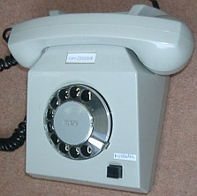
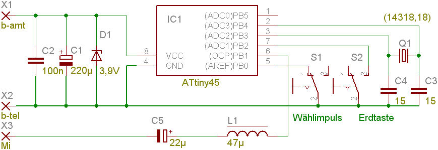
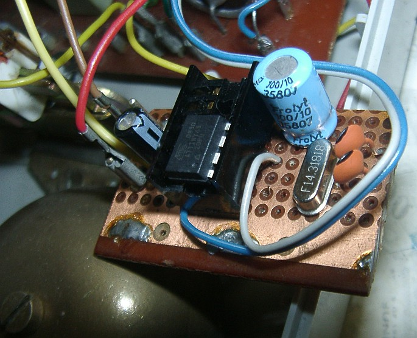
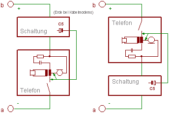

Inhalt
Impulswahl (IWV) nach Mehrfrequenzwahl (MFV) konvertieren
Zum Betrieb von Retro-Telefonen (oftmals Wandtelefon) mit Wählscheibe, also
IWV = Impulswahlverfahren auf
MFV = Mehrfrequenzverfahren
(auch denglisch DTMF genannt), zum Betrieb an einer zu einfachen
Telekommunikationsanlage
(TK-Anlage, Haustelefon, Internet-Router).
Hinweis: Fritzboxen, aber auch mein Thomson-Kabelmodem,
können mit Impulswahl umgehen.
Wer einen solchen Internet-Router hat, braucht das nicht unbedingt,
aber der zusätzliche Kurzwahl-Komfort ist ziemlich praktisch.
Telefon mit eingebautem MFV¶

Hierbei geht es um die (unsichtbare) Umrüstung eines
DDR-Telefons „Variant“ mit Wählscheibe.
Dafür gibt es zwar Konverter, die man in die Telefonzuleitungen hängt,
aber es sollten folgende Zusatzfunktionen realisiert werden:
- Programmierbare Kurzwahl (10 Nummern genügen)
- Wahlwiederholung
- Wählbarkeit von
'*' und '#'
- Rufnummern-Filterung (festprogrammierte Regeln)
Schaltplan des Telefons „Variant“¶
Die im Innern befindliche Platine ist zwar mit gerade mal 8
Bauelementen bestückt, aber dennoch derart unübersichtlich,
dass ich hier erst mal einen Schaltplan mit
lagerichtiger Kontaktanordnung erstellen musste.
Der grundsätzliche Schaltplan von Telefonen mit Wählscheibe ist stets
gleich; hier ist es hervorragend erklärt: Fernsprecher W611.
Das Mikrofon ist normalerweise ein
Kohlegrieß-Mikrofon.

Schaltplan mit lagerichtigen Kontaktmessern
Wie man erahnen kann, ist es wesentlich leichter,
die Wählscheibe vom Telefon zu trennen und dem Mikrocontroller
zuzuordnen als einen Vorsatzkonverter zu bauen.
Von der „Amtsleitung“ (ein Kabelmodem) kommen ≈ 50 V Leerlaufspannung.
Bei abgehobenem Telefonhörer fällt diese auf unter 5 V zusammen,
und es fließen ≈ 40 mA.
Das ist schon ziemlich gefräßig.
Somit kann man den Mikrocontroller gut in Reihe platzieren;
Parallelschaltung ist eher unzweckmäßig.
Mikrocontroller-Schaltung¶
Ausgangspunkt war Atmels Application Note AVR314.
Es wurde auf einen ATtiny25 umgesetzt und der
High-Speed-WPM-Generator im Zeitgeber 1 (mit 64 MHz Taktfrequenz
und ≈250 kHz resultierender Trägerfrequenz) benutzt.
Nur 2 Eingänge für den Nummernschaltkontakt und die
Erd/Flash-Taste werden benötigt.
Dadurch reicht der 8-beinige
ATtiny25,
und der RESET-Eingang
bleibt zur In-System-Programmierung frei
(= kein Hochvolt-Programmiergerät erforderlich).

Schaltplan, zur Reihenschaltung. Die Bauelemente-Werte sind
vollkommen unkritisch
Für die Tonerzeugung ist zwingend ein externer Resonator
oder Quarz erforderlich; der interne Oszillator
erwies sich als zu instabil.
(Daher funktioniert jene Schaltung nicht.)
Der Firmware-Quelltext läuft mit allem zwischen 8 und 20 MHz.
Weniger Megahertz wäre für eine präzise Tonausgabe ungünstig.
Das erledigt Timer0, an dessen
Interruptservice die DDS-Kurvenerzeugung „hängt“
sowie die gesamte Eingangsdatenverarbeitung.
Das Hauptprogramm (main()) schließlich schickt den Prozessor
in den Schlafmodus oder schubst die nächste Tonausgabe an.
Die Mikrocontrollerschaltung liegt in Reihe
zum Telefon. Siehe unten.
Das vereinfacht die Stromversorgung erheblich,
denn eine 3,9-V-Zener-Diode D1 parallel zu den
Betriebsspannunganschlüssen des ATtiny45
begrenzt die auftretende Spannung und sorgt für Verpolschutz sowie Sicherheit
vor der Rufwechselspannung.
Außer für die CPU-belastende PWM-Tongenerierung genügt dem Controller
eine wesentlich geringere Speisespannung von 1,8 V.
Dieser reduzierte Spannungsabfall sorgt für mehr Restspannung am Telefon
und damit für eine leicht bessere Sprachqualität sowie mehr
Klingel-Lautstärke als ohne so eine Maßnahme.
Dazu könnte softwaremäßig parallel zur Zener-Diode eine alte Leuchtdiode
geschaltet werden, wie im alten Schaltplan angegeben.
Diese dient zugleich auch zur Betriebskontrolle (Anzeige des
Schleifenstroms).
Leider erwies sich dieser Trick als Mikrocontroller-Töter!
Offenbar verträgt der ATtiny keine wechselnden Betriebsspannungen.
(Steht gar nicht im Datenblatt!)
Das Symptom war, dass der Mikrocontroller abstürzte aber
nach Reset wieder funktionierte,
allerdings war er (via SPI) unprogrammierbar.
So hatte ich eine Reihe Mikrocontroller verschlissen.
Die Anschlüsse für den Nummernschalter und die Erdtaste
wurden freigemacht und zum Mikrocontroller verdrahtet.
So gibt es keine Probleme mit irgendwelchen Potenzialverhältnissen.
Über die Drossel L1 und den Kondensator C5 wird schließlich
das Tonwahlsignal als PWM auf die Telefonleitung gegeben.
Solange keine Tonausgabe läuft ist der Mikrocontroller-Anschluss
hochohmig und stört das Gespräch überhaupt nicht.
Firmware¶
Die Abkopplung des Nummernschaltkontaktes von der Amtsleitung ermöglicht
eine komplette Neuzuweisung von Funktionen.
Man könnte allen möglichen Blödsinn damit realisieren,
etwa das Abspielen einer Tonfolge („Melodieklingel“) oder gar Sprache
(„Sie Vollidiot haben sich verwählt!“ wenn Flash-Speicher des
Controllers groß genug) beim Wählen einer
bestimmten Nummer oder so.
Auch das Sperren von teuren Auslands- und Sonderrufnummern fällt darunter.
Natürlich auch ein Least-Cost-Router, den man allerdings zu Fuß
aktualisieren muss.
Heutige (2015) Telefonverträge machen sowas allerdings kaum noch attraktiv.
Die Funktion „Bei aufgelegtem Hörer wählen“ erfordert eine Schaltungsänderung
oder -Erweiterung und wurde erst einmal verworfen.
Die Stromaufnahme der Testschaltung (bei 5 V aus dem Labornetzteil)
lag bei lastabhängigen 18 mA bei Tonerzeugung
sowie bei unter 1 mA in Ruhe.
Prinzipiell ließe sich die Stromaufnahme auf 1 µA senken,
wenn man Pin-Change-Interrupts benutzt und den Quarz abschaltet.
Wegen der Reihenschaltung zum Telefon ist dies jedoch unsinnig
und sogar kontraproduktiv,
da sich beim Hörer auflegen der Kondensator C1
zügig entleeren sollte.
Wichtiger ist ein geringer Störnebel im ruhenden Betrieb.
Die minimale Speisespannung für den verwendeten Firmware-Quelltext beträgt 2,7 V
wegen der Verwendung des Zeitgebers 1 im High-Speed-Modus (64 MHz).
Bei entsprechend abgesenkter Speisespannung sinkt seine Stromaufnahme
sowie die Lautstärke der Pieptöne.
Allerdings muss dann die Quarzfrequenz auf 10 MHz abgesenkt werden.
Noch kleinere Speisespannungen bis herab zu 1,8 V erfordern Änderungen:
- Der Zeitgeber 1 ist mit 32 MHz zu betreiben, halbierte Trägerfrequenz
- Die maximale Quarzfrequenz ist 4 MHz, und womöglich muss das Programm
erheblich geändert werden, um die Zeiten zu schaffen (mehr Assembler)
Die Firmware ist wie immer quelloffen
und Freeware. Zudem deutsch kommentiert.
Sie passt auch mühelos in den ATtiny25 (Füllgrad rund 60 %),
da ist noch Platz für eigene Erweiterungen.
Assembler-Routinen wurde nur für den geschwindigkeits-relevanten
DDS-Generator verwendet, der Rest ist in C programmiert.
Umständliche, frühere Schaltungsrealisierungen verwenden
einen speziellem DTMF-Chip.
Auch die Verwendung eines Mikrocontrollers mit zwei
Rechteckgenerator-Ausgängen und anschließender Tiefpassfilterung
und Summation erschien mir zu „unsportlich“,
wie anderswo mit PIC gesehen (Link fehlt).
Schließlich gibt es heutzutage bereits Lösungen für Mikrocontroller,
DTMF-Signale zu dekodieren,
was für die Firmware deutlich anspruchsvoller ist.
(Andere Lösung)
Aufbau¶
Die wenigen Bauelemente passen auf ein Stück Lochrasterplatine.
Nur beim Verdrahten muss man aufpassen, dass man nichts falsch anschließt
oder mit dem Lötkolben das Telefongehäuse anschmurgelt.
Leider hatte ich keine passenden Steckschuhe …

Ansicht der Platine (C5 ist andersherum und C2 habe ich weggelassen.)
Ich hatte gerade keine passende Steckfassung,
sondern Goldstaub aus DDR-Zeiten (passend zum Telefon eben).
Der Wert der Drossel ist total unkritisch.
Vor der Inbetriebnahme ist zu prüfen:
- Ist die Z-Diode richtig herum? Sonst kann der Mikrocontroller sterben:
Beim Klingeln (Wechselspannung!) oder bei Falschpolung.
- Sind die Elkos richtig herum?
Sonst explodieren sie nach einigen Minuten bis Tagen
- Nach Anschluss des Telefons, bei aufgelegtem Hörer,
muss eine niederohmige Verbindung
zwischen X2 und X3 nachweisbar sein!
Sonst Gefahr für den Elko C5 (zu hohe Spannung), den Mikrocontroller
(Stromstoß mit Überspannung) sowie Nichtfunktion.
Bedienungsanleitung¶
Wie sonst auch muss vor dem Bedienen der Hörer abgenommen werden.
(Sonst fehlt der Schleifenstrom für den Mikrocontroller.)
Folgende Symbolik verdeutlicht die Tastendrücke:
- = Erd-Taste drücken oder gedrückt halten (das ist die eine Taste am Telefon, die sonst nie benutzt wurde)
- = Wählscheibe betätigen und Ziffer bzw. Rufnummer wählen
- ♪ = Es erfolgt eine Sinustonausgabe zur Kontrolle;
dieser unterscheidet sich deutlich von den
dissonanzbehafteten
Wähltönen
✁
| Ein-Finger-Bedingung
|
|---|
| Wählen |
Rufnummer (wie gehabt)
|
|---|
| Kurzwahl |
Erde kurz drücken ♪ —
Ziffer
|
|---|
| Kurzwahl speichern |
Erde lang drücken ♪ —
Rufnummer ♪ —
Erde kurz drücken ♪ —
Ziffer ♪
|
|---|
| Zwei-Finger-Bedingung
(Erde und Wählscheibe gleichzeitig, zumindest am Sequenzbeginn)
|
|---|
| Wahlwiederholung |
Erde +
1 (dann Erde loslassen)
|
|---|
| Zuletzt gewählte Nummer speichern |
Erde +
2 —
Ziffer (Piep)
|
|---|
| Kurzwahl speichern (wie oben) |
Erde +
3 —
Rufnummer ♪ —
Erde (kurz) ♪ —
Ziffer ♪
|
|---|
| A..D wählen |
Erde +
4..7 (experimentell)
|
|---|
| * wählen |
Erde +
8
|
|---|
| # wählen |
Erde +
9
|
|---|
| Letzte Rufnummer löschen |
Erde +
0
|
|---|
✃
Alle Programmierungen und Funktionen lassen sich „mittendrin“
durch Betätigen der Hörergabel oder Auflegen des Hörers abbrechen.
Kapazität des Kurzwahl-Speichers¶
Diese ist an die EEPROM-Größe von 128 Byte eines ATtiny25 optimal angepasst:
Wahlwiederholungs- und Kurzwahlspeicher sind für 22 Ziffern ausgelegt.
Beim ATtiny25 (statt ATtiny45) stehen für die Kurzwahl auf Ziffer "0"
nur 14 Ziffern zur Verfügung; bei mehr gibt es eine (unabgefangene)
Kollision mit dem Speicher für Wahlwiederholung.
Rufnummern-Sperre¶
Die vorliegende, für
VoIP in Deutschland
gemachte Firmware sperrt folgende Rufnummern:
| Führende Ziffern | Bedeutung
|
|---|
| 00 | Ausland
|
| 01 | Dienste (0180), Handys, Call-By-Call
|
| 070 | Private Nummern (nie gesehen)
|
| 090 | Premium-Dienste (0900)
|
| 118 | Telefonauskunft
|
Werden diese Ziffern am Anfang gewählt, ertönt ein Dauerton
(„Todespiep“), der nur durch Auflegen des Hörers beendet werden kann,
folgende Wählversuche werden abgewiesen.
Der Filter lässt sich durch mindestens folgende Tricks überlisten:
- Durch Einspeichern und Wiedergabe einer Kurzwahl
(beabsichtigtes Verhalten).
- Durch Vorwahl von A..D
(weil von den meisten Telefonanlagen ignoriert).
Kurzwahl-Vorprogrammierung¶
Die Kurzwahl-Nummern können auch durch eine EEPROM-Datei befüllt werden.
(Man muss sie nicht mit der Wählscheibe eingeben,
wenn man schon ein Programmiergerät besitzt.)
Der Aufbau ist simpel:
EEMEM struct{
BYTE len; // Länge der Nummer: 0..22
BYTE data[11]; // 22 (BCD-)Ziffern, A-D, "*"=14, "#"=15
}pre[]={
{0}, // Wahlwiederholung (hier: leer)
{11,{0x03,0x71,0x33,0x96,0x01,0x80}}, // Kurzwahl "1" = 0371 3396018, absichtlich in "lesbarer" Folge
{12,{0x01,0x76,0x21,0x69,0x56,0x71}}, // Kurzwahl "2" = 0176 21695671
}; // usw. bis zur Kurzwahl "0"
Fragen am Rande¶
- Was passiert wenn man die a und b-Ader vertauscht?
- Der Mikrocontroller wird durch die Z-Diode D1 vor
Falschpolung geschützt, allerdings kann man mit dem Telefon
nur noch Rufe entgegennehmen, da die Wählfunktion nicht funktioniert.
Also richtig herum anschließen.
Standardmäßig ist a negativ, b positiv,
und der Gabelumschalter des Telefons ist am a-Anschluss.
Ist das nicht der Fall, sollte vorzugsweise der Installationsfehler
beseitigt werden.
Bei Kabelmodems werden die -60 V üblicherweise mit einem
Inverter
aus der Speisespannung (bspw. 12 V) generiert,
daher liegt b auf Erdpotenzial, also Antennenschirm.
Beim o.a. Anschluss (Schaltplan)
sind daher keine berührgefährlichen Spannungen zu erwarten.
- Was passiert wenn man b-amt mit b-tel verwechselt?
- Die Tonausgabe hat falschen Massebezug!
Gefahr für Mikrocontroller-Ausgang PB1!
Kontrolle: An X2 muss das andere Ende vom Mikrofon liegen.

Die beiden möglichen Anschluss-Szenarien.
Der Gabelschalter muss von der Mikrocontrollerschaltung abgewandt
sein
Liegt das Mikrofon an X1, muss C5 umgepolt werden.
Liegt das Mikrofon weder an X1 noch an X2,
muss man die a-Ader anzapfen. Hängt vom Telefon ab.
Beim Anschluss ans Mikrofon ist das Tonsignal leise im Hörer
zu hören; beim Anschluss ans Spulenende dagegen ziemlich laut.
Ausprobieren, wie's gefällt!
Gegebenenfalls einen Serienwiderstand verwenden.
Der Anschluss am Mikrofon ist zu bevorzugen an echten Telefonanschlüssen
(= lange Analogleitungen zum Amt), weil diese Anschlussart
besser vor Überspannungsspitzen bei Blitzschlag schützt.
- Der Quarz ist beliebig?
- Ja, in Grenzen, 8..20 MHz;
allerdings muss man dann das Makefile anpassen
und die Quelle neu übersetzen; die beigefügte Hex-Datei
geht dann natürlich nicht.
Die Hex-Datei ist für die NTSC-Quarzfrequenz 14318,18 kHz erstellt,
bei anderen Quarzen kommen schlichtweg falsche Töne und Zeiten heraus.
Laut Datenblatt (Bild 21-2) muss für diese Frequenz die Speisespannung 3,5 V betragen.
Die AVR-Mikrocontroller sind jedoch extrem robust bezüglich Übertaktung.
- Was passiert, wenn die Stromaufnahme des Telefons
kleiner ist als die des Mikrocontrollers?
- Das dürfte sich im Abschwächen oder gar Abreißen der Tonausgabe
bemerkbar machen, weil (nur) dann die Spannung aus C1
zusammenbricht.
Schlimmstenfalls muss man die Stromaufnahme des Telefons mit einem
Widerstand oder besser einer Stromquelle (Transistorschaltung) vergrößern.
Telefon W38 mit MFV¶
Natürlich funktioniert die o.a. Schaltung auch für ein W38.
Alternativen¶
Mehr Komfort bietet eine Lösung, die:
- Das Wählen bei aufgelegtem Hörer ermöglicht
- Die gewählte Rufnummer anzeigt; erfordert numerisches Display
- Die eingehende Rufnummer anzeigt (CLIP); erfordert numerisches Display
- Die eingehende Rufnummer mit einem Namen verknüpft;
erfordert alphanumerisches Display (sowie Tastatur oder Terminal,
im einfachsten Fall einen steckbaren Mikrocontroller
und Neuprogrammierung mit dem Telefonbuch bei Änderung)
- Eingehende DTMF-Signale dekodiert (falls die Gegenstelle Tasten drückt)
- Freisprechen ermöglicht
- Anrufbeantworter-Funktion (auf Flash-Speicher) erledigt
Und das alles ohne zusätzliche Stromversorgung.
Aber für ein Retro-Telefon geht das bestimmt zu weit …
Frage: Kann die o.a. Firmware auf einen größeren Mikrocontroller,
etwa einem ATmega328 auf einem Arduino Uno umgesetzt werden?
Antwort: Die o.a. Firmware ist extra dazu gemacht, in einen
ATtiny25 gequetscht zu werden.
Diese verwendet den High-Speed-Timer mit 64 MHz Taktfrequenz,
der im ATmega328 gar nicht enthalten ist.
Will man ohne High-Speed-Timer arbeiten, reduziert sich die Trägerfrequenz
von 250 kHz auf bspw. 31 kHz, und der Filteraufwand steigt womöglich.
Außerdem verwendet die Firmware viele Register,
was bei einem großen Mikrocontroller wenig sinnvoll ist,
weil man mit diesem auch noch andere Aufgaben erledigen will.
Die Verwendung von Registern beißt sich zudem mit einigen Routinen
der C-Standardbibliothek von avr-gcc, welche ein globales
Register-Push eincompiliert haben, etwa rand().
Bei einem größeren Controller steigt auch der Aufwand,
Interruptbehandlungsroutinen mit hoher Aufruffrequenz
(hier: die DDS-Routine) sicher ausführen zu lassen,
da andere Teilprogramme Interrupts sperren können;
man muss die volle Kontrolle über den gesamten Quelltext behalten.
Das ist nichts für Skript-Kiddies, die nicht wissen,
was sie da gerade zusammenklicken.
Der Einsatz des Arduino-Frameworks verbietet sich zudem von selbst.
Henrik Haftmann, erstellt: 8. April 2009 — letzte Änderung: 28. Juli 2016